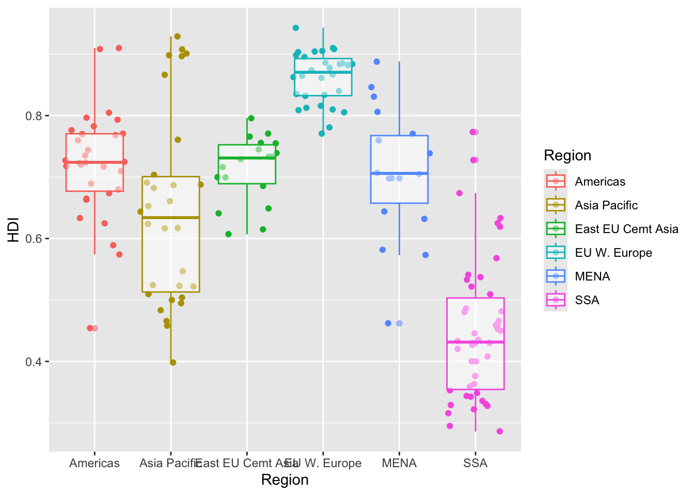

economist_data <- read.csv("https://raw.githubusercontent.com/nt246/NTRES-6100-data-science/master/datasets/EconomistData.csv")Assignment 4
Load packages
To start, load all the required packages with the following code. Install them if they are not installed yet.
Exercise 1. Corruption and human development
This exercise explores a dataset containing the human development index (HDI) and corruption perception index (CPI) of 173 countries across 6 different regions around the world: Americas, Asia Pacific, Eastern Europe and Central Asia (East EU Cemt), Western Europe (EU W. Europe), Middle East and North Africa and Noth Africa (MENA), and Sub-Saharan Africa (SSA). (Note: the larger CPI is, the less corrupted the country is perceived to be.)
First, we load the data using the following code.
1.1 Show the first few rows of economist_data.
X Country HDI.Rank HDI CPI Region
1 1 Afghanistan 172 0.398 1.5 Asia Pacific
2 2 Albania 70 0.739 3.1 East EU Cemt Asia
3 3 Algeria 96 0.698 2.9 MENA
4 4 Angola 148 0.486 2.0 SSA
5 5 Argentina 45 0.797 3.0 Americas
6 6 Armenia 86 0.716 2.6 East EU Cemt Asia1.2 Expore the relationship between human development index (HDI) and corruption perception index (CPI) with a scatter plot as the following.
1.3 Make the color of all points in the previous plot red.
1.4 Color the points in the previous plot according to the Region variable, and set the size of points to 2.
1.5 Set the size of the points proportional to HDI.Rank

1.6 Fit a smoothing line to all the data points in the scatter plot from Excercise 1.4
`geom_smooth()` using method = 'loess' and formula = 'y ~ x'1.7 Fit a separate straight line for each region instead, and turn off the confidence interval.
`geom_smooth()` using formula = 'y ~ x'1.8 Building on top of the previous plot, show each Region in a different facet.
`geom_smooth()` using formula = 'y ~ x'1.9 Show the distribution of HDI in each region using density plot. Set the transparency to 0.5
1.10 Show the distribution of HDI in each region using histogram and facetting.
`stat_bin()` using `bins = 30`. Pick better value with `binwidth`.1.11 Show the distribution of HDI in each region using a box plot. Set the transparency of these boxes to 0.5 and do not show outlier points with the box plot. Instead, show all data points for each country in the same plot. (Hint: geom_jitter() or position_jitter() might be useful.)

1.12 Show the count of countries in each region using a bar plot.
Warning in geom_bar(mapping = aes(x = Region, Fill = Region)): Ignoring unknown
aesthetics: Fill1.13 You have now created a variety of different plots of the same dataset. Which of your plots do you think are the most informative? Describe briefly the major trends that you see in the data.
Answer:
In general CPI increases as HDI increases and in my opinion the graph that showed that best was the graph from 1.6.
Exercise 2. Theophylline experiment
This exercise uses the Theoph data frame (comes with your R installation), which has 132 rows and 5 columns of data from an experiment on the pharmacokinetics of the anti-asthmatic drug theophylline. Twelve subjects were given oral doses of theophylline then serum concentrations were measured at 11 time points over the next 25 hours. You can learn more about this dataset by running ?Theoph
Have a look at the data structure
| Subject | Wt | Dose | Time | conc |
|---|---|---|---|---|
| 1 | 79.6 | 4.02 | 0.00 | 0.74 |
| 1 | 79.6 | 4.02 | 0.25 | 2.84 |
| 1 | 79.6 | 4.02 | 0.57 | 6.57 |
| 1 | 79.6 | 4.02 | 1.12 | 10.50 |
| 1 | 79.6 | 4.02 | 2.02 | 9.66 |
| 1 | 79.6 | 4.02 | 3.82 | 8.58 |
For the following exercise, transform the data as instructed. Try to use tidyverse functions even if you are more comfortable with base-R solutions. Show the first 6 lines of the transformed data in a table through RMarkdown using the kable() function, as shown above.
2.1 Select columns that contain a lower case “t” in the Theoph dataset. Do not manually list all the columns to include.
| Subject | Wt | Time |
|---|---|---|
| 1 | 79.6 | 0.00 |
| 1 | 79.6 | 0.25 |
| 1 | 79.6 | 0.57 |
| 1 | 79.6 | 1.12 |
| 1 | 79.6 | 2.02 |
| 1 | 79.6 | 3.82 |
2.2 Rename the Wt column to Weight and conc column to Concentration in the Theoph dataset.
| Subject | Weight | Dose | Time | Concentrtation |
|---|---|---|---|---|
| 1 | 79.6 | 4.02 | 0.00 | 0.74 |
| 1 | 79.6 | 4.02 | 0.25 | 2.84 |
| 1 | 79.6 | 4.02 | 0.57 | 6.57 |
| 1 | 79.6 | 4.02 | 1.12 | 10.50 |
| 1 | 79.6 | 4.02 | 2.02 | 9.66 |
| 1 | 79.6 | 4.02 | 3.82 | 8.58 |
2.3 Extract the Dose greater than 4.5 and Time greater than the mean Time.
| Subject | Wt | Dose | Time | conc |
|---|---|---|---|---|
| 3 | 70.5 | 4.53 | 7.07 | 5.30 |
| 3 | 70.5 | 4.53 | 9.00 | 4.90 |
| 3 | 70.5 | 4.53 | 12.15 | 3.70 |
| 3 | 70.5 | 4.53 | 24.17 | 1.05 |
| 5 | 54.6 | 5.86 | 7.02 | 7.09 |
| 5 | 54.6 | 5.86 | 9.10 | 5.90 |
2.4 Sort the Theoph dataset by Wt from smallest to largest and secondarily by Time from largest to smallest.
| Subject | Wt | Dose | Time | conc |
|---|---|---|---|---|
| 5 | 54.6 | 5.86 | 0.00 | 0.00 |
| 5 | 54.6 | 5.86 | 0.30 | 2.02 |
| 5 | 54.6 | 5.86 | 0.52 | 5.63 |
| 5 | 54.6 | 5.86 | 1.00 | 11.40 |
| 5 | 54.6 | 5.86 | 2.02 | 9.33 |
| 5 | 54.6 | 5.86 | 3.50 | 8.74 |
2.5 Create a new column called Quantity that equals to `Wt x Dose in the Theoph dataset. This will tell you the absolute quantity of drug administered to the subject (in mg). Replace the Dose variable with Quantity.
| Subject | Wt | Time | conc | Quantity |
|---|---|---|---|---|
| 1 | 79.6 | 0.00 | 0.74 | 319.99 |
| 1 | 79.6 | 0.25 | 2.84 | 319.99 |
| 1 | 79.6 | 0.57 | 6.57 | 319.99 |
| 1 | 79.6 | 1.12 | 10.50 | 319.99 |
| 1 | 79.6 | 2.02 | 9.66 | 319.99 |
| 1 | 79.6 | 3.82 | 8.58 | 319.99 |
2.6 Find the mean conc and sum of the Dose received by each test subject.
Show data for the 6 subjects with the smallest sum of Dose as below. Do not define new intermediate objects for this exercise; use pipes to chain together functions
| Subject | mean_conc | total_dose |
|---|---|---|
| 6 | 3.525454 | 44.00 |
| 7 | 3.910909 | 54.45 |
| 8 | 4.271818 | 49.83 |
| 11 | 4.510909 | 54.12 |
| 3 | 5.086364 | 49.83 |
| 2 | 4.823636 | 48.40 |